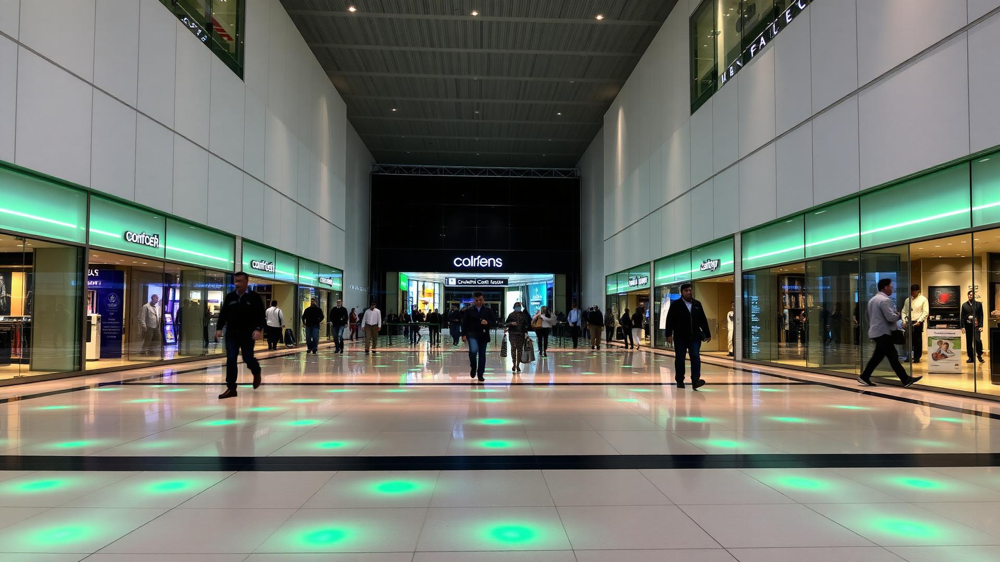
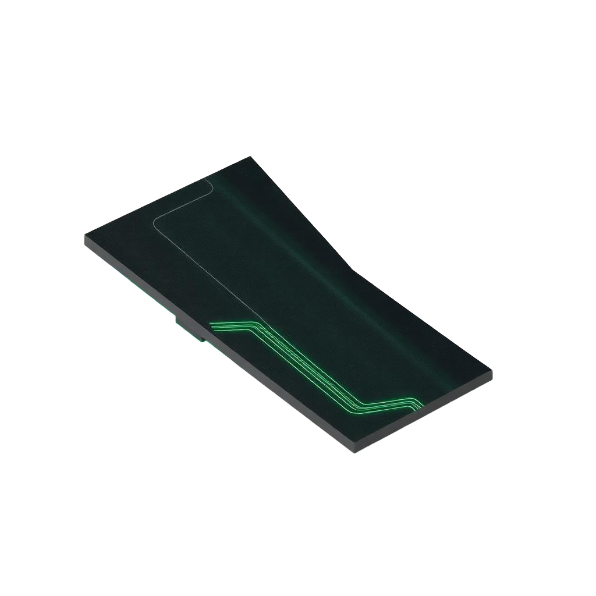
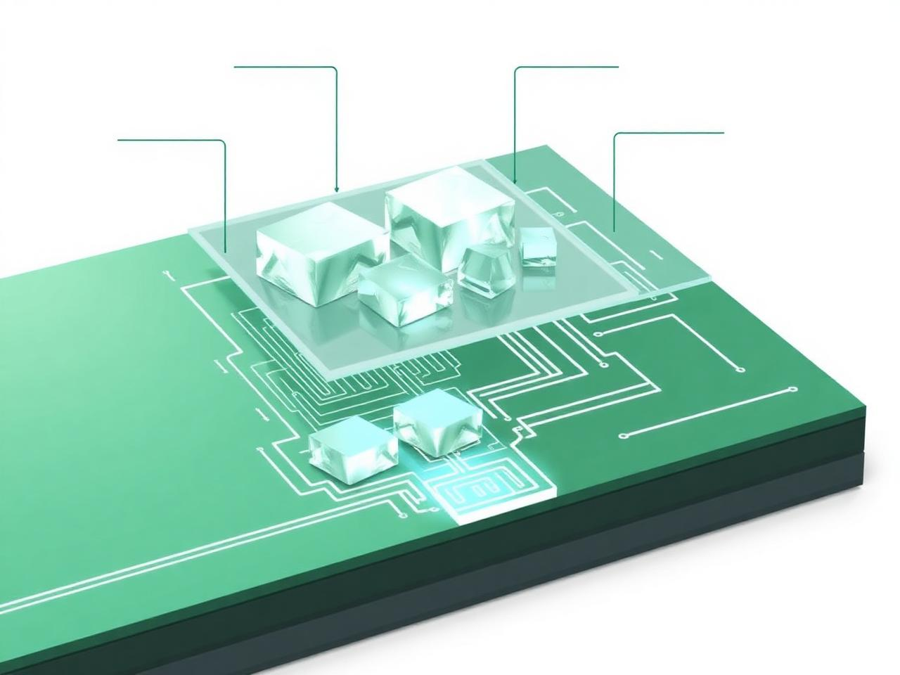
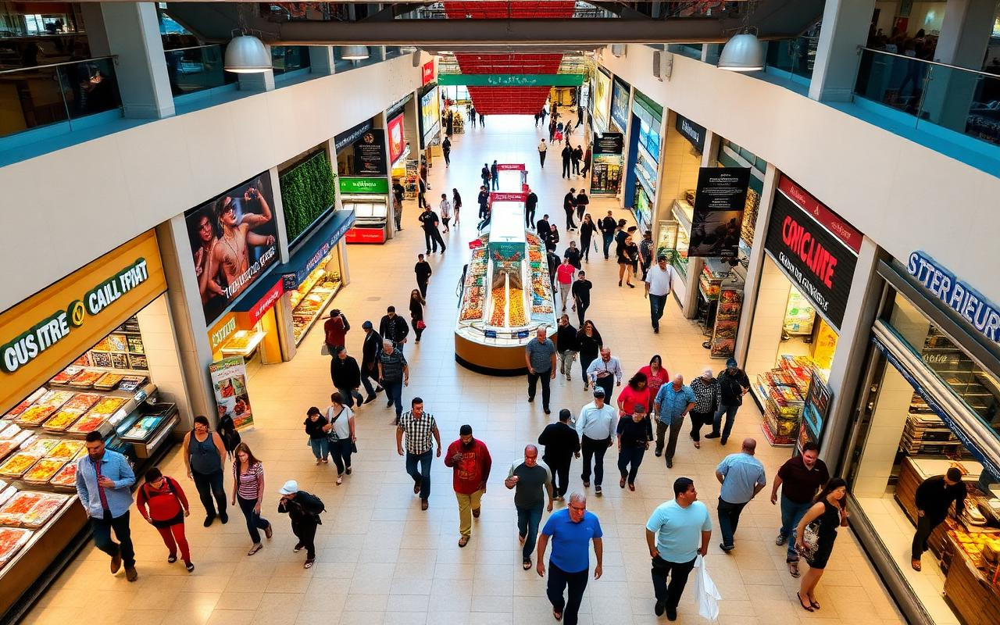

Valle Verde investiga la implementación de baldosas piezoeléctricas en centros comerciales de México como una estrategia sostenible viable para aprovechar el alto tráfico peatonal y transformarlo en electricidad aprovechable, reduciendo el consumo energético convencional y promoviendo la innovación urbana responsable.

Generación promedio por baldosa bajo tránsito constante.
Pisadas registradas al día en accesos principales.
Energía limpia, sin emisiones contaminantes.
Vida útil estimada del sistema con mantenimiento mínimo.
La piezoelectricidad es un fenómeno físico mediante el cual ciertos materiales cristalinos —como el cuarzo, la turmalina o cerámicas como el titanato de bario (BaTiO₃) y el titanato zirconato de plomo (PZT)— generan una corriente eléctrica al ser sometidos a una presión o deformación mecánica.
Descubierto en 1880 por los hermanos Pierre y Jacques Curie, este principio se aplica hoy a la generación de energía limpia mediante baldosas inteligentes que aprovechan la energía cinética del paso humano.
Reorganización molecular de cristales bajo presión genera diferencia de potencial.
Transforma energía mecánica (pisadas) en electricidad utilizable.
Cero emisiones, sin combustibles fósiles ni residuos contaminantes.
Desde una baldosa hasta sistemas integrales en grandes superficies.
Cada baldosa es un dispositivo electromecánico capaz de transformar la energía cinética de las pisadas en energía eléctrica aprovechable, mediante un proceso en cinco etapas.

El peso de una persona ejerce presión sobre la superficie superior de la baldosa, deformándola micrométricamente (2–5 mm).
Los cristales piezoeléctricos (cerámicas PZT) reaccionan a la presión generando una diferencia de potencial eléctrico.
Un circuito interno recolecta la corriente alterna producida y la rectifica a corriente continua estable.
La energía se almacena en baterías de litio o supercondensadores integrados en el sistema.
Alimenta iluminación LED, señalética digital, sensores IoT o se inyecta a la red interna del centro comercial.

En México, los centros comerciales reciben en promedio entre 30,000 y 120,000 visitantes diarios según su categoría. Esta densidad de tránsito convierte a las plazas comerciales en uno de los entornos urbanos más eficientes para implementar baldosas piezoeléctricas.
La estrategia consiste en instalar el sistema únicamente en las zonas de mayor concentración peatonal, maximizando la generación eléctrica con la menor inversión inicial.
Acceso obligatorio para todos los visitantes; concentra el mayor flujo continuo durante el horario de operación.
Corredores troncales que conectan tiendas ancla; tránsito constante de clientes con bolsas y carritos.
Food courts con permanencia prolongada y movimiento concentrado en horas pico.
Áreas de mayor atracción comercial (cines, supermercados, departamentales) con tráfico sostenido.
La adopción de baldosas piezoeléctricas trasciende lo energético: representa un compromiso integral con la sostenibilidad, la innovación y la responsabilidad social corporativa.
Reducción de la huella de carbono y dependencia de combustibles fósiles. Energía 100% limpia generada in situ.
Disminución del consumo eléctrico convencional, retorno de inversión a mediano plazo y menor gasto operativo.
Posiciona al centro comercial como pionero en sostenibilidad y atrae al consumidor responsable.
Suma puntos para certificaciones LEED, EDGE y BREEAM en construcción sostenible.
Genera conciencia ambiental en los visitantes mediante señalización interactiva del impacto generado.
Materiales resistentes con vida útil de hasta 20 años y mantenimiento mínimo.
Desglose de la inversión estimada para la importación e instalación de las baldosas piezoeléctricas en centros comerciales de México.
| Producto | Piezas | Precio unitario | Precio total | Arancel (Tratado AAE) | IVA | PCA | PCI |
|---|---|---|---|---|---|---|---|
| Baldosas | 80 | 300 USD | 2,4000 USD | 0% | 1.16% | 80,000 USD | 27,840 USD |
| Transporte (seguro) | Embalaje | Almacenamiento | Seguro | Costo margen |
|---|---|---|---|---|
| 5,000 USD | 150 USD | 1,000 MXN | 0.5 | 2,500 MXN |
* Cifras estimadas con fines académicos. Los valores reales pueden variar según el tipo de cambio, condiciones del proveedor y la regulación vigente.
Arrow Asia es una empresa con sede en Japon dedicada al desarrollo e implementación de soluciones de generación energética a partir de baldosas piezoeléctricas. Su tecnología ha sido instalada en centros comerciales, estaciones de transporte y espacios públicos de gran afluencia en Asia, demostrando la viabilidad técnica y económica del modelo que Valle Verde propone replicar en México.